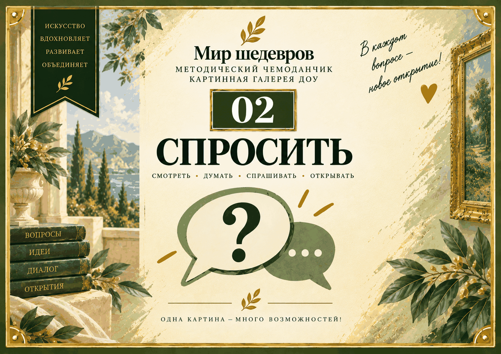

Одна карточка — один самостоятельный мини-сценарий
Педагогу не нужно использовать карточки по порядку. Выберите одну, которая подходит к конкретной картине и задаче встречи. Карточка даёт вопрос ребёнку и методическую опору взрослому.
Для удобной печати каждая исходная карточка целиком размещена на отдельном листе А4 в альбомной ориентации. После сгиба получается карточка формата А5.

Скачать материалы «СПРОСИТЬ»
Карточки для печати: 24 страницы, одна исходная карточка целиком на одном листе А4 в альбомной ориентации. Лицевая и оборотная стороны остаются рядом и после сгиба образуют готовую карточку А5.
Методическое сопровождение: внешняя и внутренняя обложки, содержание папки и методическая памятка педагогу.
Выберите нужный тип вопроса
Серии раскрываются отдельно, поэтому на телефоне не нужно прокручивать все 24 карточки сразу.
01Я вижу6 карточекПосмотреть карточки
Вопросы, которые направляют внимание ребёнка на детали, цвет, свет, расположение объектов и действия персонажей.
02Я думаю6 карточекПосмотреть карточки
Вопросы для предположений, объяснений и собственных версий ребёнка.
03Спроси у картины6 карточекПосмотреть карточки
Карточки, которые помогают ребёнку самому вступить в воображаемый диалог с произведением.
04Я выбираю6 карточекПосмотреть карточки
Вопросы личного выбора: что привлекло внимание, что хочется рассмотреть, показать другому или перенести в собственный замысел.
Как работать с папкой
Методическая памятка объясняет общий принцип использования карточек.
Не опрос о картине — а разговор с картиной
Вопрос нужен не для угадывания «правильного ответа», а для внимательного рассматривания, собственной версии и речевого высказывания ребёнка.